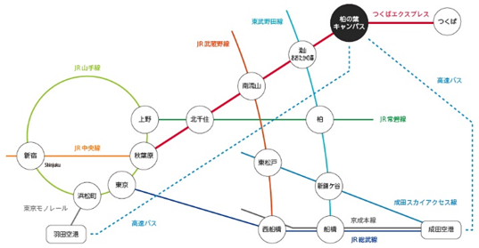
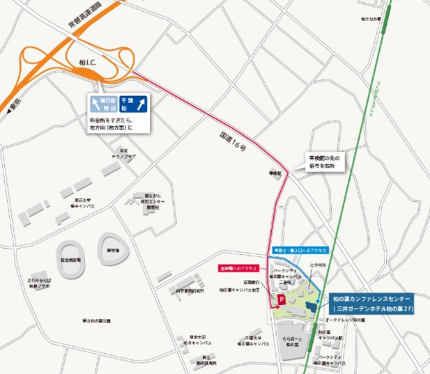

アクティビティ
日本・ロシア極東農業ビジネスフォーラム2020
～蜂蜜ビジネス拡大の可能性～
日 時
2020年2月28日（金） 13時00分 ～ 16時50分 （予定）
主 催
国立大学法人 千葉大学
会 場
柏の葉カンファレンスセンター
〒277-0871 千葉県柏市若柴178番地4 ホテル＆レジデンス棟2階
参加費
無料 （フォーラム終了後に情報交換会〈会費 3,000円〉を開催予定）
言 語
同時通訳（ロシア語・日本語）
内 容
極東ロシアからの蜂蜜輸入拡大のための課題、その解決策の情報共有を目的としたフォーラムです。
ロシア極東地域、シベリア地域から
・ 国立沿海地方農業アカデミー（沿海地方ウスリースク市）
・ サハリン国立総合大学（サハリン州ユジノサハリンスク市）
・ 極東農業大学（アムール州ブラゴヴェシチェンスク市）
・ ノボシビルスク農業大学（ノボシビルスク州ノボシビルスク市）
上記4大学及び各地域の関係する地方行政府、企業の参加が予定されています。
プログラム概要
・ 千葉大学副学長挨拶
・ 発表（予定）
極東ロシア産はちみつの輸入拡大に向けた課題
各地区の養蜂・蜂蜜生産の特徴、輸出状況
・ パネルディスカッション
・ 情報交換会（会費3,000円）
申込：事前申込制
① 名前
② メールアドレス
③ 所属（機関・部署・職名・所在地）
④ 情報交換会（会費 3,000円）への参加の有無
以下「登録」リンクより上記情報を入力の上、お申込みください。
フォーラムに関するお問い合わせ
メール fc-farm@chiba-u.jp
電話 04－7137―8103
ウェブ http://www.fc.chiba-u.jp/farm/jp/

Page QR-code
会場へのアクセス
電車 つくばエクスプレス 柏の葉キャンパス駅徒歩2分
車 常磐道柏インターより10分（駐車場有料）
地 図